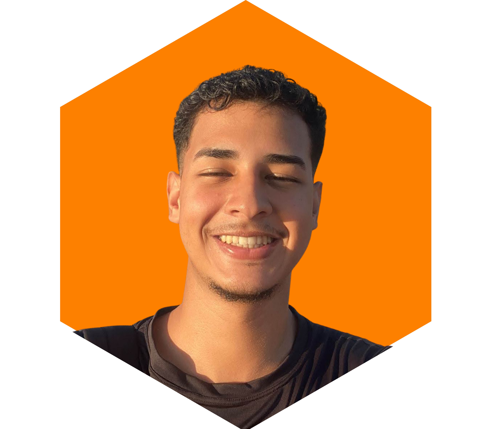

Quem é Dayron?
Um entusiasta em inovações e apaixonado por tecnologia...

Prazer sou Bruno Dayron!
Sou Desenvolvedor RPA Júnior, estudante de Sistemas de Informação e Técnico em Informática, com experiência em suporte técnico, automação de processos, análise de dados e desenvolvimento de soluções digitais.
Minha trajetória começou na área de suporte, onde desenvolvi uma base sólida em diagnóstico de problemas, atendimento ao usuário, redes, infraestrutura e resolução de incidentes. Essa experiência me ajudou a criar uma visão prática sobre processos, falhas operacionais e oportunidades de melhoria.
Atualmente, atuo no desenvolvimento de automações utilizando Python, integração com APIs, tratamento de dados, criação de dashboards, rotinas automatizadas e soluções voltadas para redução de esforço manual e ganho de eficiência operacional.
Tenho buscado evoluir constantemente em análise de processos, RPA, desenvolvimento backend, banco de dados e Inteligência Artificial aplicada à automação. Meu objetivo é transformar problemas operacionais em soluções simples, inteligentes e escaláveis.